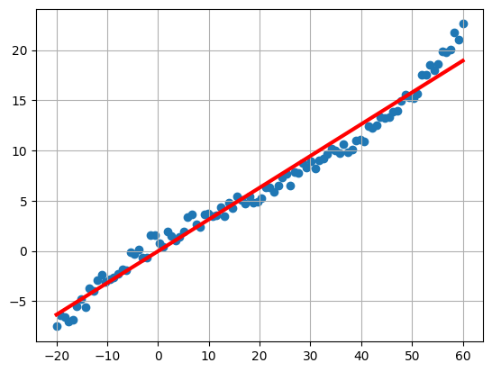
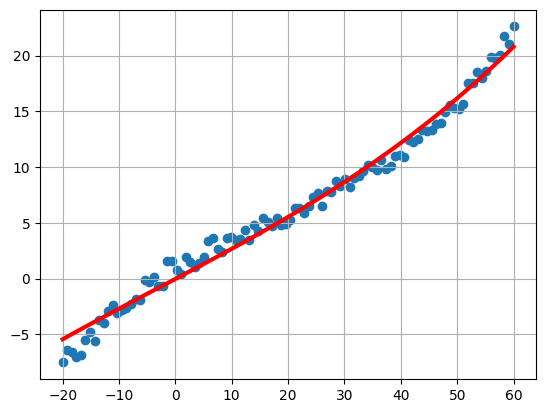

import csv
import math
import numpy as np
from matplotlib import pyplot as pltLab 2. Linear Regression
Author: Gabriel Szewczyk
Date: 11.03.2024
import essential libraries
read measurements.csv file
with open('./measurements.csv', 'r') as f:
csvreader = csv.reader(f, delimiter=',')
data = [row for row in csvreader]
data = np.array(data, dtype=np.float32)visualize input data:
x = data[:, 0]
y = data[:, 1]
plt.scatter(x, y)
plt.grid()
plt.show()Linear regression of one variable.
function h_fun which calculates predicted values for a vector x:
def h_fun(x, theta_0, theta_1):
'''
:param x: ndarray o wymiarze ilości przykładów
:param theta_0: parametr wolny modelu regresji liniowej jednej zmiennej
:param theta_1: parametr przy xi modelu regresji liniowej jednej zmiennej
:return: ndarray o wymiarze takim samym jak x, który zawiera wartości f. regresji liniowej dla podanych wag
'''
return [theta_0 + theta_1*x[ind] for ind in range(len(x))]function calculate_cost that computes the cost value for given model parameters:
def calculate_cost(x, y, theta_0, theta_1):
'''
:param x: ndarray o wymiarze ilości przykładów
:param y: ndarray z wartościami referencyjnymi o wymiarze takim jak x
:param theta_0: parametr wolny modelu regresji liniowej jednej zmiennej
:param theta_1: parametr przy xi modelu regresji liniowej jednej zmiennej
:return: wartość funkcji kosztu dla podanych paramterów modelu
'''
m = len(x) # training set size
x_predicted = h_fun(x, theta_0, theta_1)
J_unit_fun = lambda temp_x, temp_y: (1/(2*m))*(temp_x-temp_y) # cost function by unit
J_theta = [J_unit_fun(x, y) for x, y in zip(x_predicted, y)] # values for rate
return sum(J_theta) # sum up values for function valueControl parameters for an optimization algorithm and the parameters defining a mode:
eps = 1e-5 # akceptowalna różnica dla kolejnych wartości funkcji kosztu
alpha = 0.001 # learning rate
theta_0 = 0 # - wartości początkowe parametrów modelu
theta_1 = 0
def lg_plot(x, y, eps, alpha, theta_0, theta_1):
plt.scatter(x, y)
plt.grid()
plt.plot(x, (theta_0 + theta_1*x), color='red', linewidth=3)
plt.show()
lg_plot(x, y, eps, alpha, theta_0, theta_1)Implementation of the gradient descent algorithm for finding the optimal weights for a linear regression model:
eps = 1e-5 # akceptowalna różnica dla kolejnych wartości funkcji kosztu
theta_0 = 0 # - wartości początkowe parametrów modelu
theta_1 = 0
cost_before = 0
current_cost = 1000
count = 0
while abs(current_cost - cost_before) > eps: # with abs output is more precise, but iterates much more times
cost_before = calculate_cost(x, y, theta_0, theta_1)
theta_0 = theta_0 - ((alpha/len(x))*sum(h_fun(x, theta_0, theta_1) - y))
theta_1 = theta_1 - ((alpha/len(x))*sum((h_fun(x, theta_0, theta_1) - y)*x))
current_cost = calculate_cost(x, y, theta_0, theta_1)
count +=1
print("number of iterations: ", count) # number of iterations
print(f"Theta values: {round(theta_0, 5)}, {round(theta_1, 5)}") # counted values
print(f"cost: {round(current_cost, 5)}") # estimated minimal cost
lg_plot(x, y, eps, alpha, theta_0, theta_1)
# θ0 = 0.0065, θ1 = 0.3154, J = 0.6392 values observed for epsilon = 1e-2number of iterations: 615
Theta values: -0.01892, 0.31593
cost: 0.01734
Multiple linear regression
Prepare matrices
X = np.vstack([np.ones(x.shape), x])
y.shape = [1, -1]
theta = np.array([[0], [0]])
print(X.shape)
print(y.shape)(2, 100)
(1, 100)Adapting previous functions for operations on multiple variables
def h_fun(X, theta):
'''
:param X: ndarray postaci (n+1, m).
:param theta: macierz parametrów do optymalizacji postaci (n+1, 1)
:return:
'''
return (theta.T @ X)def calculate_cost(X, y, theta):
'''
:param X: ndarray postaci (n+1, m).
:param y: ndarray z wartościami referencyjnymi o wymiarze (1, m)
:param theta: macierz parametrów do optymalizacji postaci (n+1, 1)
:return: wartość f. kosztu
'''
m = X.shape[-1] # training set size
X_predicted = h_fun(X, theta)
J_unit_fun = lambda temp_X, temp_y: (1/(2*m))*(temp_X-temp_y) # cost function by unit
J_theta = [J_unit_fun(x, y) for x, y in zip(X_predicted, y)] # values for rate
return sum(sum(J_theta)) # sum up values for function valueGradient descent algorithm in multiple regression case, testing on previous example
eps = 1e-5 # akceptowalna różnica dla kolejnych wartości funkcji kosztu
theta = np.array([[0], [0]])
cost_before = 0
current_cost = 1000
count = 0
while abs(current_cost - cost_before) > eps: # with abs output is more precise, but iterates much more times
cost_before = calculate_cost(X, y, theta)
h_y_diff = (h_fun(X, theta) - y)
gradient = h_y_diff @ X.T
theta = theta - alpha * gradient.T / X.shape[-1]
current_cost = calculate_cost(X, y, theta)
count += 1
print("number of iterations: ", count) # number of iterations
print(f"Theta values: {np.round(theta[0], 5)}, {np.round(theta[1], 5)}") # counted values
print(f"cost: {round(current_cost, 5)}") # estimated minimal cost
# θ0 = 0.0065, θ1 = 0.3154, J = 0.6392 values observed for epsilon = 1e-2number of iterations: 614
Theta values: [-0.01887], [0.31592]
cost: 0.01734The results match the previous ones. Let’s apply the algorithm to another dataset.
Read data from housing.txt:
with open('./housing.txt', 'r') as f:
csvreader = csv.reader(f, delimiter=',')
data2 = [row for row in csvreader]
data2 = np.array(data2, dtype=np.float32)
y = data2[:, 2]
y.shape = [1, y.shape[0]]
X = data2[:, 0:2]
X = np.concatenate([np.ones((X.shape[0], 1)), X], axis=1).TScaling loaded data due to different ranges of features
y_scale = y.max()
y = y / y_scale
X_scale = X.max(axis=1)
X_scale.shape = [-1, 1]
X = X / X_scaleGradient descent algorithm on housing dataset
eps = 1e-10 # akceptowalna różnica dla kolejnych wartości funkcji kosztu
theta = np.array([[0], [0], [0]])
cost_before = 0
current_cost = 1000
count = 0
while abs(current_cost - cost_before) > eps: # with abs output is more precise, but iterates much more times
cost_before = calculate_cost(X, y, theta)
h_y_diff = (h_fun(X, theta) - y)
gradient = h_y_diff @ X.T
theta = theta - alpha * gradient.T / X.shape[-1]
current_cost = calculate_cost(X, y, theta)
count += 1
print("number of iterations: ", count) # number of iterations
print(f"Theta values: {np.round(theta[0], 5)}, {np.round(theta[1], 5)}, {np.round(theta[2], 5)}") # counted values
print(f"cost: {round(current_cost, 5)}") # estimated minimal costnumber of iterations: 5108
Theta values: [0.26972], [0.2172], [0.19862]
cost: 0.00316Rescaling features back, output
example = np.array([[1], [1300], [4]])
h_example = theta.T @ (example/X_scale) * y_scale
print(f'koszt nieruchomosi o pow. {example[1][0]} z l. pok. {example[2][0]} oszacowany na {h_example[0][0]}')koszt nieruchomosi o pow. 1300 z l. pok. 4 oszacowany na 344118.0481441404Polynomial regression
Preparing the matrix X where consecutive rows are combinations of nonlinear transformations of the original feature
x = data[:, 0]
y = data[:, 1]
X = np.vstack([np.ones(x.shape), x, x**2, x**3])Scaling data
X_scale = X.max(axis=1)
X_scale.shape = [-1, 1]
X = X / X_scale
y.shape = [1, -1]
y_scale = y.max()
y = y / y_scaleValidate wheter predictor variables have proper size
theta = np.array([[0], [0], [0], [0]])
print(y.shape)
print(X.shape)
print(theta.shape)
h = h_fun(X, theta)
print(h.shape)(1, 100)
(4, 100)
(4, 1)
(1, 100)Gradient descent algorithm on polynomial regerssion case for measurements database
eps = 1e-10 # akceptowalna różnica dla kolejnych wartości funkcji kosztu
theta = np.array([[0], [0], [0], [0]])
alpha = 1e-3
cost_before = 0
current_cost = 1000
count = 0
while abs(current_cost - cost_before) > eps: # with abs output is more precise, but iterates much more times
cost_before = calculate_cost(X, y, theta)
h_y_diff = (h_fun(X, theta) - y)
gradient = h_y_diff @ X.T
theta = theta - alpha * gradient.T / X.shape[-1]
current_cost = calculate_cost(X, y, theta)
count += 1
print("number of iterations: ", count) # number of iterations
print(f"Theta values: {np.round(theta[0], 5)}, {np.round(theta[1], 5)}, {np.round(theta[2], 5)}, {np.round(theta[3], 5)}") # counted values
print(f"cost: {round(current_cost, 5)}") # estimated minimal cost
number of iterations: 136151
Theta values: [-0.00122], [0.70762], [0.03084], [0.18252]
cost: -1e-05Rescaling features back
X = X * X_scale
y = y * y_scale
predicted_y = (theta.T @ (X/X_scale) * y_scale).TVisualize polynomial regression
plt.scatter(x, y)
plt.grid()
plt.plot(x, (predicted_y), color='red', linewidth=3)
plt.show()